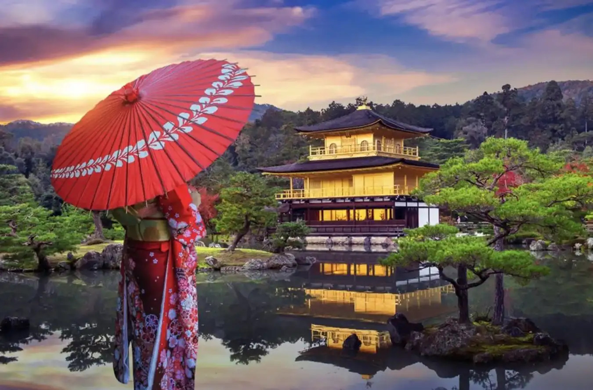
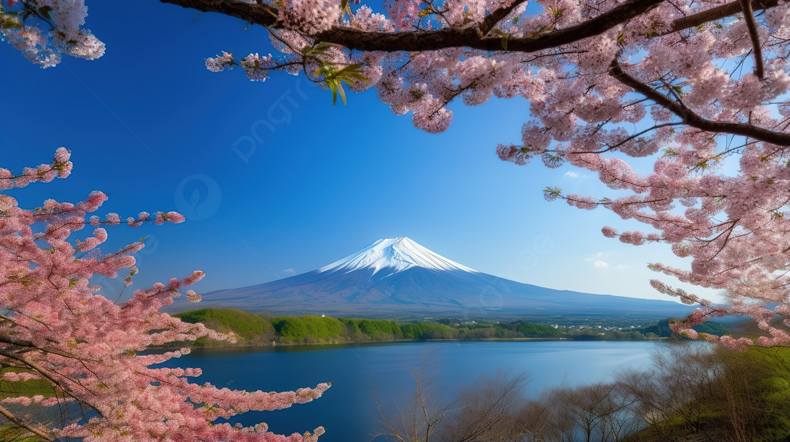
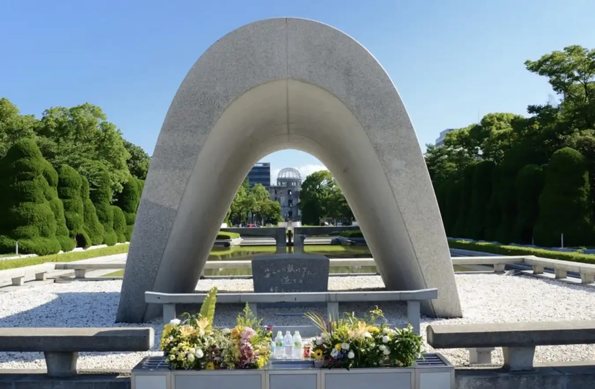
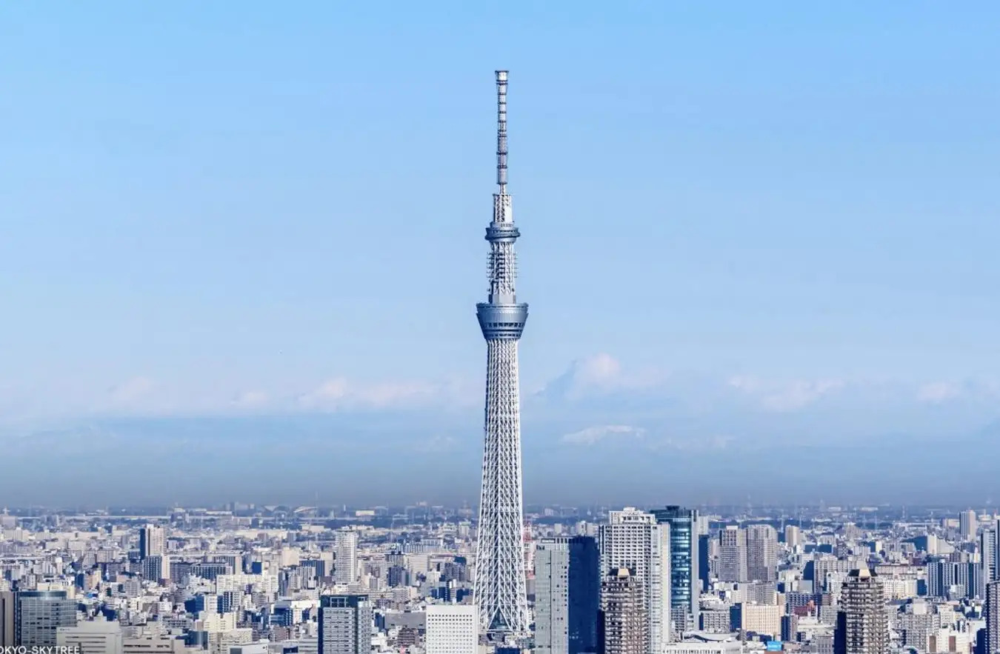
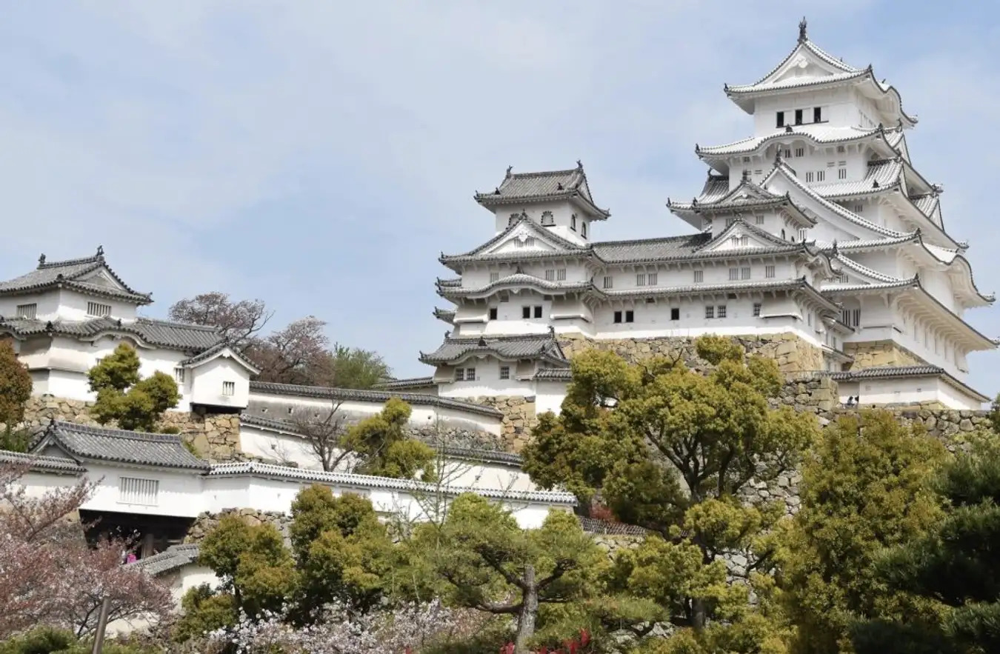

Contents
- Home
- Tourist Destinations
- Culture & Myths
- About Us
When in Japan
Ready to uncover the best of Japan? Buckle up for a whirlwind tour of the 7 must-see spots that will make your travel buddies green with envy. Start in the neon-lit jungle of Tokyo, where every corner feels like it's straight out of a futuristic film, then make your way to Kyoto, where ancient temples and geishas might just make you think you’ve time-traveled. Don’t forget to snap that selfie with Mount Fuji—because, come on, who doesn’t want to say they’ve conquered Japan’s most famous peak (even if it’s from a distance)? Take a dip in the hot springs of Hakone, wander through the endless arches of Fushimi Inari, and of course, the ultimate Disney dream awaits you in Tokyo Disneyland. If you’re a fan of all things samurai, make your way to Kanazawa’s Kenrokuen Garden. And finally, no trip to Japan is complete without exploring the bullet-train zipping, castle-fortified, sushi-filled wonderland that is Osaka. Seven spots, countless memories—and maybe even a couple of sushi-induced food comas. Ready for the adventure? Let’s go!
1. Fushimi Inari Taisha and Kinkaku-ji

If Japan were a storybook, Fushimi Inari Taisha and Kinkaku-ji would be two of its most enchanting chapters. First up, we have Fushimi Inari Taisha in Kyoto, home to the mesmerizing torii gates that lead you on an ethereal journey up Mount Inari. As you wander through this sea of red, it feels as though you’ve stepped into a mystical realm where time slows down, and every turn reveals a hidden shrine or a moment of quiet contemplation. This iconic site is a tribute to Inari, the Shinto deity of rice, and it's a spot you absolutely must visit to get your fill of spiritual vibes and Instagram-worthy snaps.
Then, just a short distance away, you’ll find Kinkaku-ji, the Golden Pavilion, gleaming like something out of a dream. Set amidst a tranquil garden and reflecting perfectly on the serene pond before it, this Zen Buddhist temple is a breathtaking blend of nature and architecture. The golden-leaf-covered walls shimmer in the sunlight, creating a scene so beautiful, it could easily be plucked from a fairytale. Fushimi Inari may have its torii gates and Kinkaku-ji its glittering gold, but both are part of the same unforgettable tapestry that defines Kyoto as the heart of Japan’s ancient soul.
So whether you’re seeking the spiritual serenity of Fushimi Inari or the dazzling beauty of Kinkaku-ji, these two gems are an absolute must-see for anyone eager to dive into Japan's rich cultural and architectural heritage. And hey, the photos? They’ll last longer than your sense of awe, but just barely.
2. Osaka's Castle

Nestled in the heart of Osaka, Osaka Castle is the perfect mix of ancient grandeur and modern flair, making it one of Japan's most iconic landmarks. This striking fortress, with its imposing stone walls and gold-leaf accents, was originally built in the late 1500s by the legendary samurai warlord Toyotomi Hideyoshi—and it’s still holding court today, centuries later. While the exterior is a testament to Japan’s feudal past, the interior has been transformed into a sleek, interactive museum that brings the castle’s rich history to life (hello, tech-savvy history buffs!).
But it’s not just about what’s inside—the surrounding Osaka Castle Park is a haven for nature lovers, boasting lush gardens, serene ponds, and breathtaking views, especially when the cherry blossoms bloom in spring. Whether you’re strolling around the moat, admiring the views from the observation deck, or snapping selfies with the castle as your backdrop, Osaka Castle is a place where you can soak in both the past and present in one fell swoop. It's like stepping into a time machine—only this one also has Wi-Fi.
So, if you find yourself in Osaka, don’t miss a chance to experience this historical gem that manages to feel both timeless and totally on trend. You might just leave with a newfound appreciation for samurai and a strong desire to rock a golden helmet. (Don’t worry, it’s totally normal.)
3. Mount Fuji

No trip to Japan is truly complete without a visit to the mountain—Mount Fuji, Japan's highest peak and a symbol of beauty, serenity, and, let’s be honest, a tiny bit of awe-induced panic for those daring enough to climb it. Rising a majestic 3,776 meters above sea level, Fuji-san is not just a mountain; it's a national treasure, revered in art, culture, and mythology for centuries. Whether you’re gazing at it from the comfort of a cozy café or conquering the summit (because, yes, you can), there’s something undeniably humbling about this symmetrical giant.
For most, seeing Mount Fuji from a distance is an experience that stays with you forever—the way its snow-capped peak pierces the sky like a natural crown. But for the more adventurous, a climb up Fuji is the ultimate Japanese bucket-list challenge. The trekking season, from July to early September, sees thousands of climbers pushing themselves to reach the summit for sunrise, a magical moment known as Goraiko, when the first rays of light bathe the world in golden hues.
Even if you're not scaling the peak, the surrounding areas—like the tranquil Fuji Five Lakes region or the picturesque Hakone hot springs—offer stunning views and the perfect opportunity to relax and reflect on Japan’s spiritual connection to its iconic mountain. Fuji isn’t just a mountain; it’s a pilgrimage, a symbol of resilience, and one of those places that makes you pause and think, “Wow, nature really knows how to put on a show.”
So, whether you’re there for the photos, the climb, or just to stand in awe of one of the most iconic natural wonders on Earth, Mount Fuji is a must-see that will take your breath away—literally and figuratively.
4. Hiroshima's Peace Memorial Park and Museum

Hiroshima’s Peace Memorial Park is a poignant reminder of both the horrors of war and the unbreakable human spirit. Located at the heart of the city, this serene park serves as a living tribute to the victims of the atomic bombing in 1945, as well as a call for global peace. The iconic Atomic Bomb Dome—a hauntingly preserved structure that survived the blast—stands as the centerpiece, a somber symbol of the devastation wrought by that fateful day. It’s not just a memorial; it’s a place of deep reflection that reminds us of the fragility of peace and the importance of never forgetting history.
A visit to Hiroshima is incomplete without stepping into the Peace Memorial Museum, where you'll find heart-wrenching exhibits that tell the stories of those who lived through the bombing and its aftermath. It’s a tough but necessary experience, as it provides a deeper understanding of the human cost of war. The museum walks you through the events leading up to the bombing, the horrific impact on the city, and the incredible resilience of Hiroshima’s people in the years that followed.
But Hiroshima isn’t just about remembering the past. The Peace Memorial Park is also a symbol of hope and reconciliation, with its serene walking paths, tranquil ponds, and lush greenery. The Cenotaph for the A-bomb Victims and the Peace Flame—which will remain lit until nuclear weapons are abolished—offer a sense of quiet resolve amidst the surrounding beauty. It’s a space where visitors from around the world gather to reflect, to mourn, and ultimately to pledge their commitment to a world free from the horrors of war.
Hiroshima’s Peace Memorial Park and Museum isn’t just a destination; it’s an experience that stays with you, challenging your perceptions of peace and humanity. It's a powerful place to honor the past while inspiring hope for a better, more peaceful future.
5. Tokyo Skytree

Standing tall at a staggering 634 meters, the Tokyo Skytree isn’t just a skyscraper—it’s a futuristic marvel that redefines the Tokyo skyline. As the tallest structure in Japan and the second tallest in the world, this architectural behemoth is part observation tower, part cultural landmark, and part shopping mall. It’s so tall, in fact, that on a clear day, you might catch glimpses of Mount Fuji from the top—talk about a view that will knock your socks off!
Visitors flock to the Skytree not only for the panoramic views but for the thrill of being up in the clouds. The two observation decks offer jaw-dropping vistas of Tokyo’s endless sprawl, with a bird's-eye view of everything from Tokyo Disneyland to the shimmering bay. If you're feeling especially daring, take a step out onto the glass floor in the "Tembo Galleria" and look straight down (your stomach might take a moment to catch up).
But the Skytree isn't just about the views—it’s a complete experience. The lower floors are home to an entire shopping complex, filled with restaurants, boutiques, and even an aquarium. Plus, the tower’s lighting changes seasonally, creating a stunning visual spectacle every night. Whether you’re marveling at the twinkling lights of the city below or catching your breath after ascending to the heavens, the Tokyo Skytree offers a one-of-a-kind way to experience the modern pulse of Japan.
So, if you’re looking for a towering icon that blends high-tech cool with awe-inspiring views, Tokyo Skytree is your ticket to seeing the city from a whole new height—literally and figuratively.
6. Himeji Castle

If Japan had a crown jewel of castles, Himeji Castle would be it. This stunning UNESCO World Heritage site, often called the "White Heron Castle" for its elegant, white exterior and soaring rooflines that resemble a bird in flight, looks like something straight out of a fairytale. Located in Hyogo Prefecture, Himeji Castle is a pristine example of feudal Japanese architecture, and unlike many other castles, it has managed to remain largely intact through the centuries—surviving wars, earthquakes, and even the ravages of time.
Step onto the castle grounds, and you'll be transported to another era. The towering white walls and winding stone paths leading up to the main keep make you feel like you're entering a grand fortress of the samurai. As you approach the castle, its imposing yet graceful silhouette looms against the sky, creating a perfect backdrop for photos (and moments of jaw-dropping awe). Inside, you can explore the labyrinth of narrow hallways, steep stairs, and cleverly designed traps that were built to protect the castle from invaders—who knew architecture could be so deviously clever?
The views from the top are spectacular, offering a panoramic vista of the surrounding city and the distant mountains. And, as an added bonus, the castle grounds are beautiful year-round, with cherry blossoms in spring and vibrant autumn leaves that paint the landscape in brilliant hues.
Whether you're a history buff, an architecture enthusiast, or just someone who enjoys soaking up Japan's cultural gems, Himeji Castle is an absolute must-see. It's a place where the past truly comes alive, and where you can imagine the stories of samurai and shoguns who once walked these very halls. Plus, it's got that magical, I-can’t-believe-this-is-real vibe that makes you want to shout, “I’m living in a history book!”
7. Nara Citadel Cluster
While Nara is often celebrated for its famous temples and the friendly deer that roam freely, the Nara Citadel Cluster offers a quieter, more mysterious side of the city—one that transports you back to Japan’s imperial past. Once the heart of the ancient capital of Heijō-kyō (which was the capital before Kyoto), this sprawling archaeological site is where Japan’s imperial power first began to take shape in the 8th century. The ruins of the Nara Citadel, or Heijō Palace, may not have the towering structures you find at other iconic sites, but what it lacks in size, it more than makes up for in historical significance.
Walking through the ruins of the citadel, you'll find yourself wandering past large ceremonial gates, the foundations of palatial buildings, and open courtyards where Japan’s emperors once held court. While much of the site is still being excavated, several key areas have been reconstructed to give visitors a taste of the grandeur that once existed here. The Suzaku Gate, one of the main entrances to the palace, stands tall as a symbol of the strength and importance the citadel once held.
As you explore the area, it’s hard not to feel a sense of awe at the fact that you’re standing on the very grounds where Japan’s imperial family once governed, influencing the culture, politics, and religion of an entire nation. Nearby, the Nara National Museum offers fascinating exhibits about the Heijō-kyō period, giving even more context to the ruins you’re walking through.
For history enthusiasts or those looking to step off the beaten path, the Nara Citadel Cluster is a must-visit. It’s a place where you can feel the weight of centuries of history, all while being surrounded by a peaceful atmosphere that feels far removed from the hustle and bustle of modern life. It’s a bit of a hidden gem—so grab your walking shoes and get ready to uncover Japan’s ancient imperial roots!